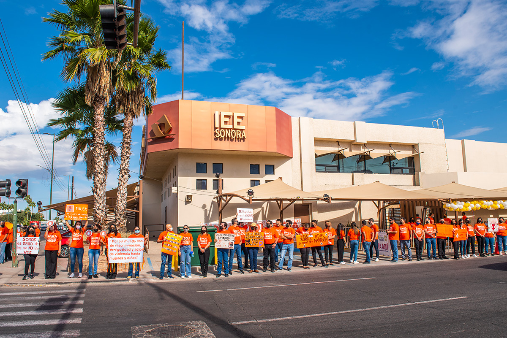
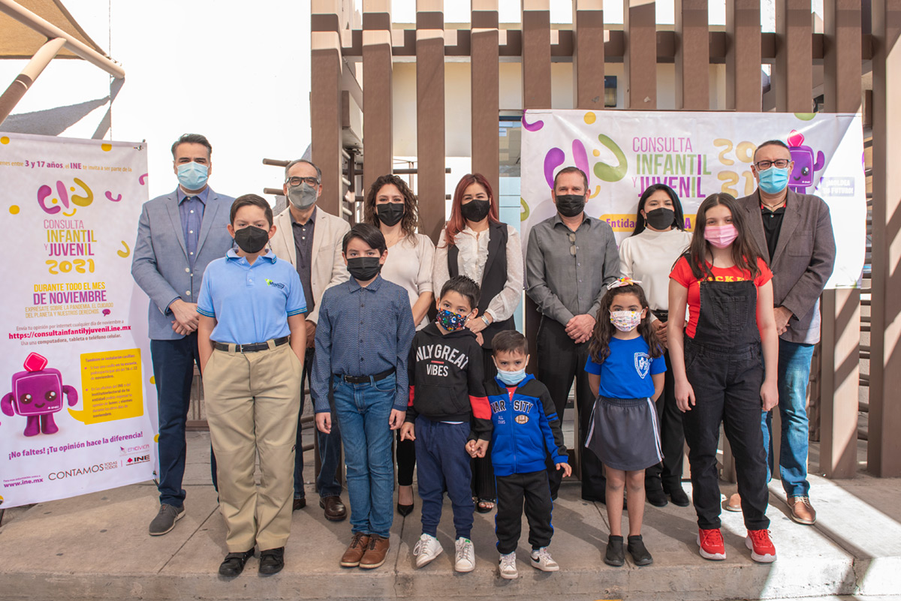
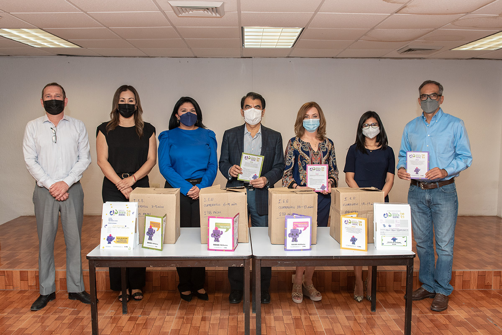
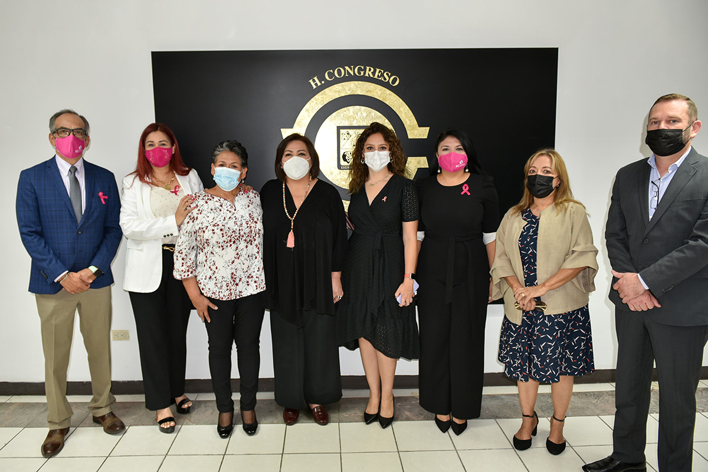

Actividades Recientes

En el marco del Día Naranja personal del IEE Sonora se manifestó con cartelones en Blvd. Rosales, de Colosio a Luis Encinas para poner un alto a la violencia contra las mujeres y niñas.
El IEE Sonora se suma a la Campaña Únete de ONU Mujeres México Pinta el mundo de naranja, PONGAMOS FIN A LA VIOLENCIA CONTRA LAS MUJERES YA

En presencia de consejeras y consejeros electorales, participaron niñas, niños y jovenes en la Consulta Infantil y Juvenil 2021 en la casilla fija instalada en el IEE Sonora
En sesion solemne de Consejo General, toma protesta el Mtro.Nery Ruiz Arvizu como Consejero Presidente del IEE Sonora
Vocal Ejecutivo de la Junta Local Ejecutiva del INE Sonora entrega nombramiento como Consejero Presidente del IEE Sonora al Mtro. Nery Ruiz Arvizu de parte del Consejo General del INE Mexico

A Solicitud del INE Sonora, el IEE Sonora hace entrega de boletas impresas para la Consulta Infantil y Juvenil 2021. que seran distribuidas con el apoyo de CONAFE en todo Sonora.
Integrantes del Consejo General presentes en la Firma de Convenio de Colaboracion de la Consulta Infantil y Juvenil2021 entre INE Sonora y SEC Sonora.

Integrantes del Consejo General del IEE Sonora acompaña a la Lic. Guadalupe Taddei Zavala en la entrega de la Presea al Poderio de las Mujeres otorgada por el Congreso del Estado de Sonora.
En el marco de la conmemoracion del 68 Aniversario del Voto Femenino en Mexico, el IEE Sonora promueve la Denuncia a la Violencia Politica contra la Mujer en razon de genero.

Mtro.Benjamin Hernandez Avalos asume como Presidente Provisional del IEE Sonora.